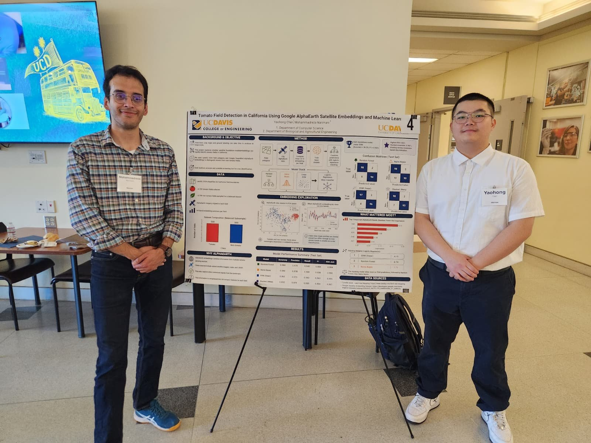
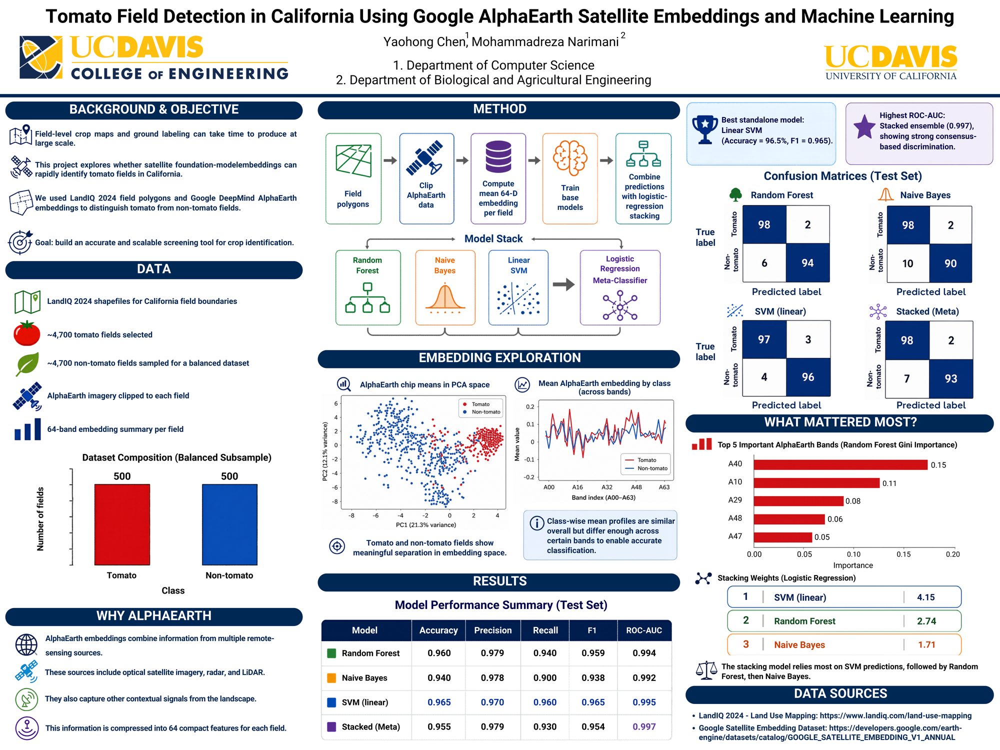

🍅 Tomato Field Detection with Google AlphaEarth
By Mohammadreza Narimani · Mentoring Yaohong Chen
ESEARCH Spring 2026 · UC Davis College of Engineering Poster Showcase
Mentorship Moment
In the UC Davis ESEARCH program, graduate mentors guide undergraduates from research idea to execution and public presentation. In Spring 2026 I mentored Yaohong Chen on a geospatial machine-learning project that maps tomato fields across California using Google AlphaEarth satellite embeddings.
Yaohong presented the poster “Tomato Field Detection in California Using Google AlphaEarth Satellite Embeddings and Machine Learning” at the UC Davis College of Engineering showcase. Watching a mentee walk peers and faculty through their own maps, methods, and results is one of the most rewarding parts of academic mentoring.

Project Overview
Poster title: Tomato Field Detection in California Using Google AlphaEarth Satellite Embeddings and Machine Learning
Mentee: Yaohong Chen
Graduate mentor: Mohammadreza Narimani
Program: ESEARCH Spring 2026 · UC Davis College of Engineering
Lab context: Digital Agriculture / remote sensing & geospatial AI at UC Davis
California’s processing-tomato industry needs timely, field-scale maps of where crops are grown. Traditional photo-interpretation is slow; cloudy seasons and phenology shifts make hand labels expensive. AlphaEarth geospatial embeddings compress multi-temporal satellite context into analysis-ready feature stacks that machine-learning models can classify at scale.
This ESEARCH project gave Yaohong end-to-end practice in: framing an agricultural remote-sensing question, working with foundation-model embeddings, training and evaluating supervised models, designing a scientific poster, and presenting at a College of Engineering event.
Why AlphaEarth for Tomato Mapping
- Field-scale decision support: Processing-tomato acreage and location matter for supply chains, water planning, and pest/disease logistics.
- Embedding features: AlphaEarth provides dense geospatial representations that reduce the need to hand-engineer every spectral index.
- Machine learning: Classical and modern classifiers can turn embeddings into tomato vs. non-tomato maps with clear train/test discipline.
- Open research culture: Code and resources live on GitHub so other students can reproduce and extend the workflow.
Research Poster
The showcase poster summarizes motivation, AlphaEarth inputs, machine-learning workflow, map examples, and takeaways for California tomato monitoring. It was designed for a broad engineering audience: clear figures first, methods second, and open links for anyone who wants to dig deeper.

Code and Resources
Project source code and supporting materials are available on GitHub so students and collaborators can explore the AlphaEarth–machine-learning pipeline used for tomato field detection.
Acknowledgments
Thank you to Yaohong Chen for the dedication that made this poster presentation possible. Thanks also to the UC Davis College of Engineering and the ESEARCH coordinators—including Professor Richard Corsi, Alin Wakefield, and the full ESEARCH team—for creating a structured path for undergraduate research and graduate mentorship.
About the Mentor
Mohammadreza Narimani
PhD Candidate, University of California, Davis
Digital Agriculture · Remote Sensing · Geospatial AI · Undergraduate Research Mentorship
Closing Thought
ESEARCH Spring 2026 was another reminder that strong undergraduate research is a partnership: clear scientific questions, modern Earth-observation tools like AlphaEarth, and a mentee ready to present their work in public. I am proud of Yaohong’s progress and grateful to the College of Engineering for hosting the showcase.